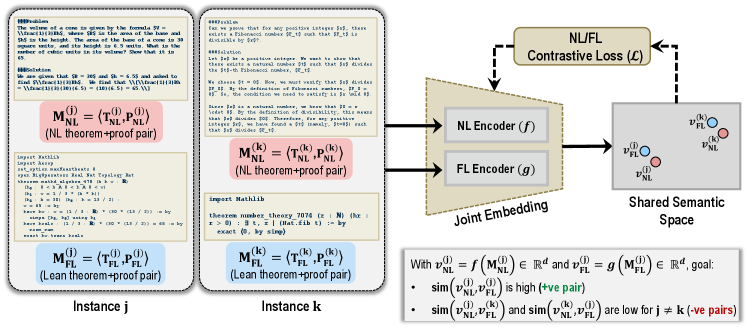
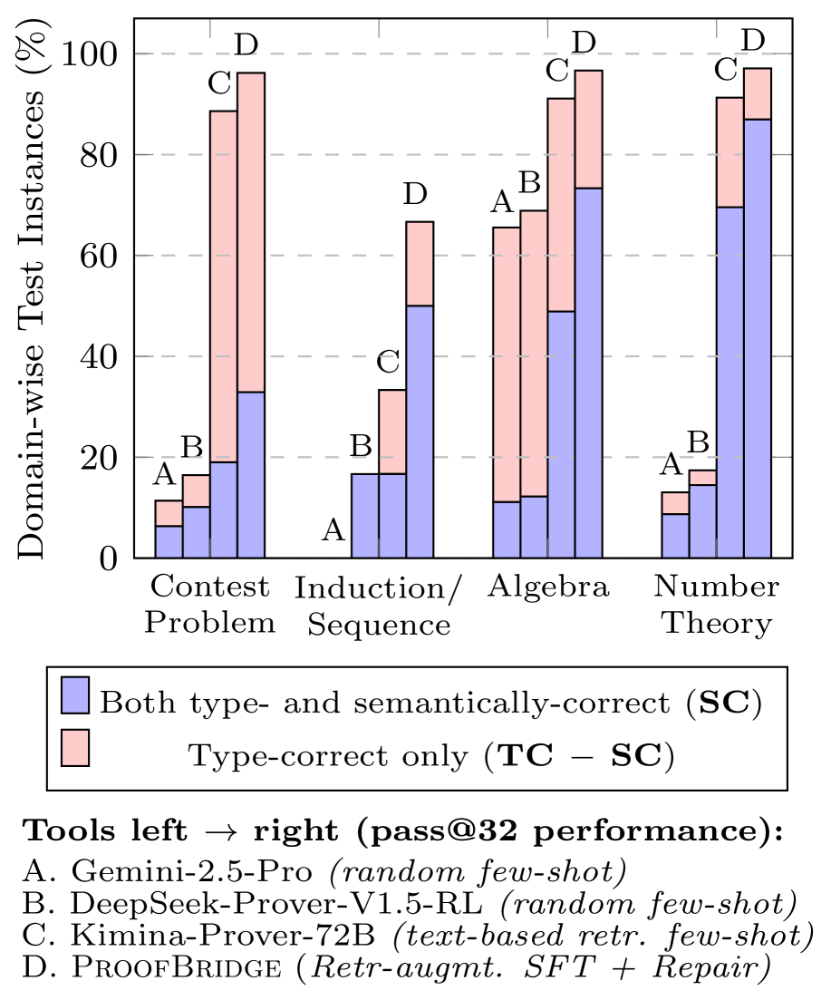

ProofBridge auto-formalizes entire natural-language theorems and proofs into Lean 4 using joint NL-FL embeddings and Lean type-checker feedback.
Abstract
Translating human-written mathematical theorems and proofs from natural language (NL) into formal languages (FLs) like Lean 4 has long been a significant challenge for AI. Most state-of-the-art methods either focus on theorem-only NL-to-FL auto-formalization or on FL proof synthesis from FL theorems. In practice, auto-formalization of both theorem and proof still requires human intervention, as seen in AlphaProof's silver-medal performance at the 2024 IMO, where problem statements were manually translated before automated proof synthesis. We present ProofBridge, a unified framework for automatically translating entire NL theorems and proofs into Lean 4. At its core is a joint embedding model that aligns NL and FL (NL-FL) theorem+proof pairs in a shared semantic space, enabling cross-modal retrieval of semantically relevant FL examples to guide translation. ProofBridge integrates retrieval-augmented fine-tuning with iterative proof repair, leveraging Lean's type checker and semantic equivalence feedback to ensure both syntactic correctness and semantic fidelity. Experiments show substantial improvements in proof auto-formalization over strong baselines (including GPT-5, Gemini-2.5, Kimina-Prover, DeepSeek-Prover), with our retrieval-augmented approach yielding significant gains in semantic correctness (SC, via proving bi-directional equivalence) and type correctness (TC, via type-checking theorem+proof) across pass@k metrics on miniF2F-Test-PF, a dataset we curated. In particular, ProofBridge improves cross-modal retrieval quality by up to 3.28x Recall@1 over all-MiniLM-L6-v2, and achieves +31.14% SC and +1.64% TC (pass@32) compared to the baseline Kimina-Prover-RL-1.7B.
Problem
Auto-formalization of both theorems and proofs from natural language into Lean 4 remains difficult. Most methods handle only theorem-only translation or proof synthesis from already-formalized theorems, leaving a gap in end-to-end NL-to-FL proof translation.
Approach
ProofBridge uses a joint embedding model to align natural language and formal language (Lean 4) theorem+proof pairs in a shared semantic space. Cross-modal retrieval of semantically relevant FL examples guides translation. The framework integrates retrieval-augmented fine-tuning with iterative proof repair using Lean's type checker and semantic equivalence feedback.

(a) Joint embedding of NL and FL (Lean) theorems and proofs into shared semantic space
Results
ProofBridge improves cross-modal retrieval by up to 3.28x Recall@1 over all-MiniLM-L6-v2. On miniF2F-Test-PF, it achieves +31.14% semantic correctness and +1.64% type correctness at pass@32 compared to the baseline Kimina-Prover-RL-1.7B, outperforming GPT-5, Gemini-2.5, and DeepSeek-Prover.

Figure 3: Category-wise Results. Proof auto-formalization performance across mathematical domains.